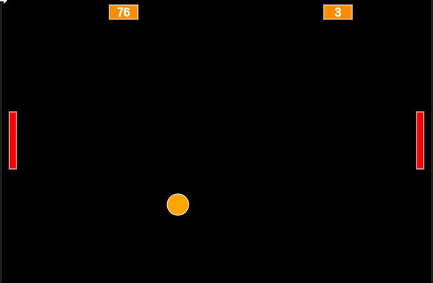
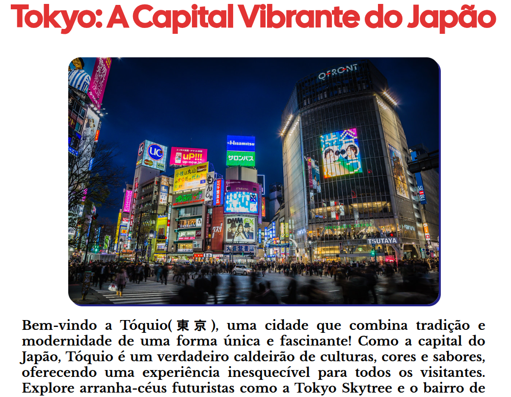

Meu Site: Tokyo, a Capital Japonesa
Este projeto é uma página web que apresenta uma lista de alguns lugares de Tokyo e uma Descrição da cidade. A página é estilizada com CSS para uma visualização agradável e usa fontes externas do Google Fonts.

Projeto Pong no p5js
Este projeto é uma página web que disponibiliza um jogo baseado em ping pong para jogar Online. A página é totalmente feita utilizando JavaScript

Meu Site: Tokyo, a Capital Japonesa
Este projeto é uma página web que apresenta uma lista de alguns lugares de Tokyo e uma Descrição da cidade. A página é estilizada com CSS para uma visualização agradável e usa fontes externas do Google Fonts.